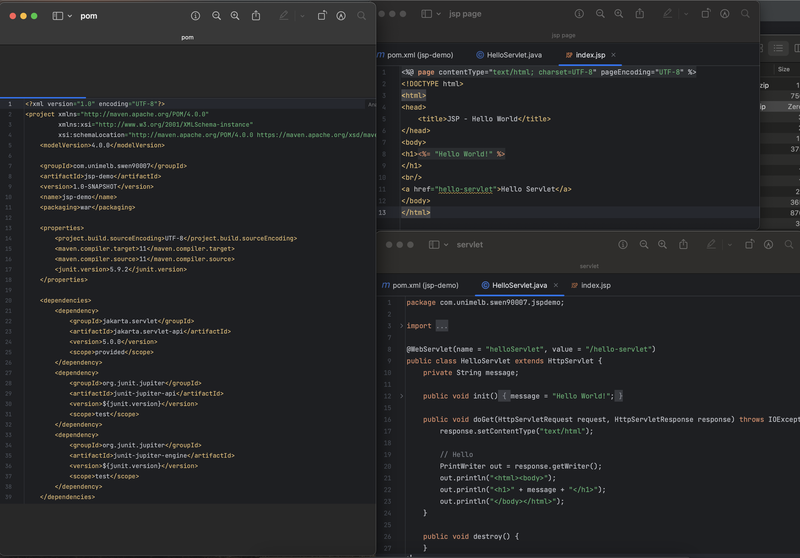
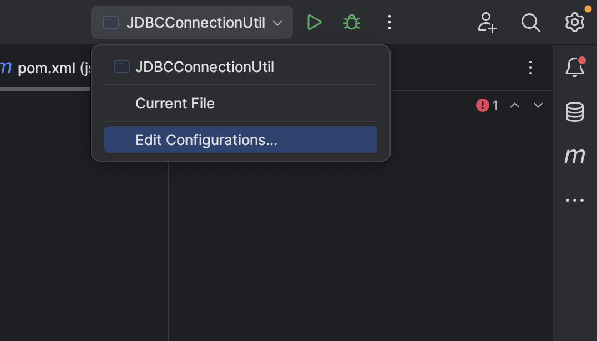
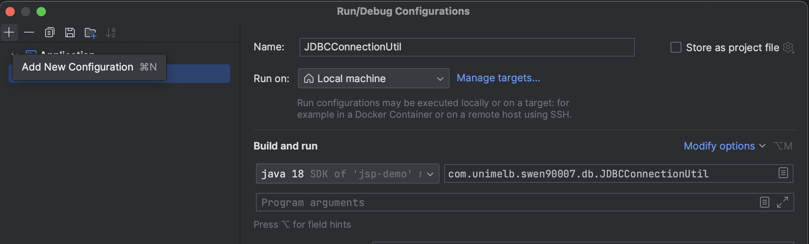
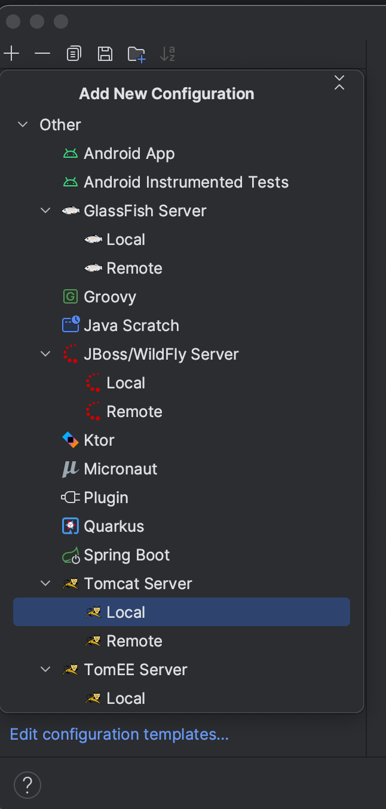
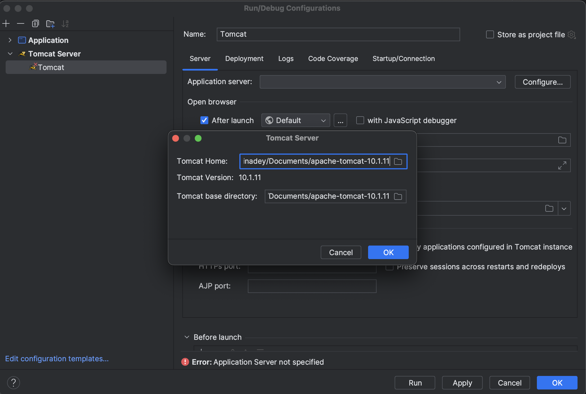
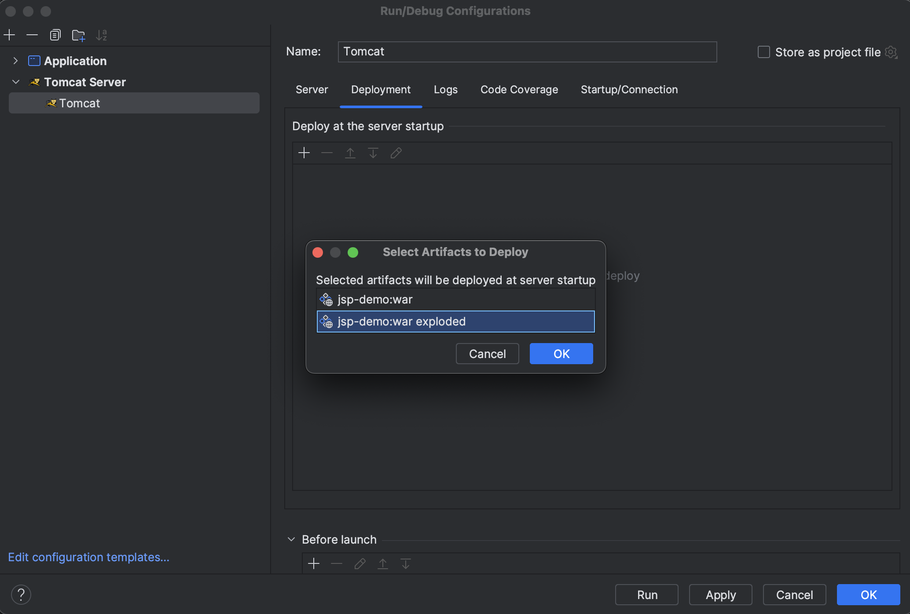
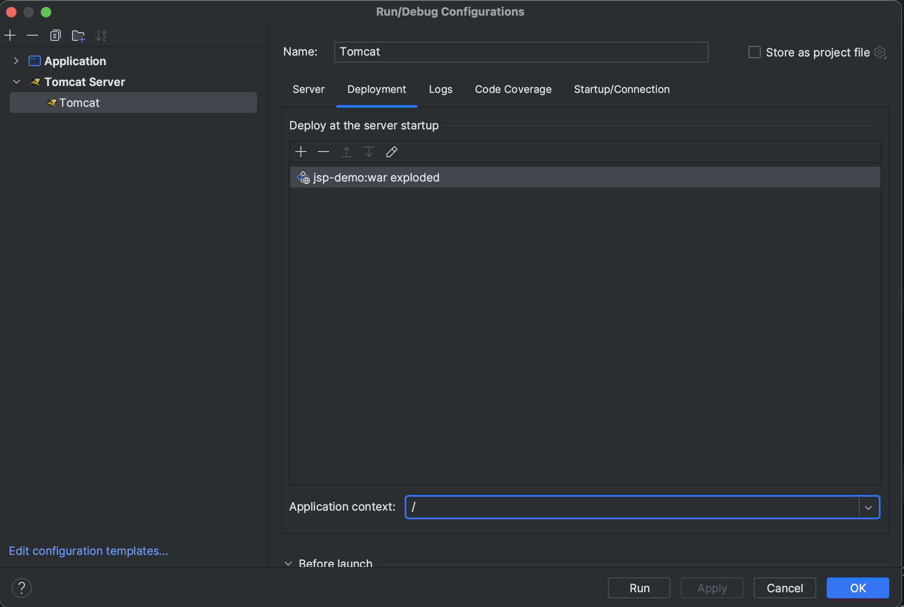
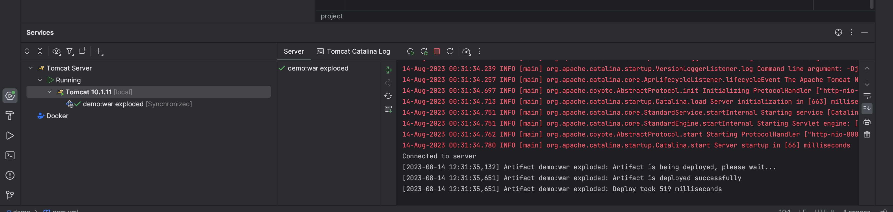
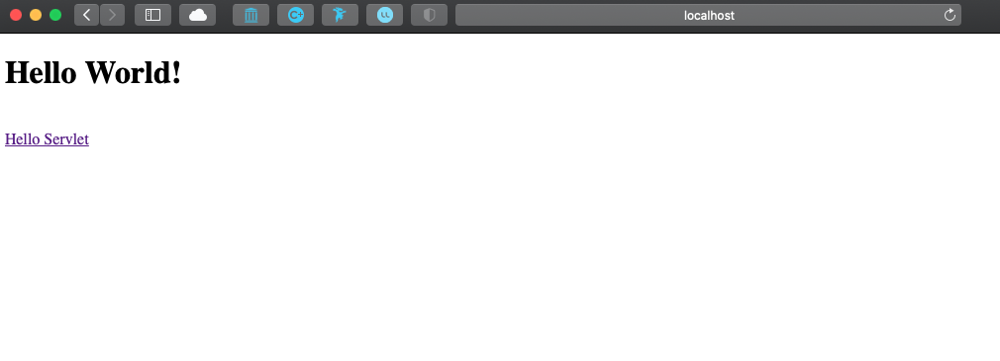

Step 4: Create Project in IntelliJ#
Attention
First confirm you have a Java Virtual Machine (JVM) installed on your machine. For Macs, the JVM can normally be found in the following directory: {Macintosh HD}/Library/Java/JavaVirtualMachines. If there is no JVM installed on your machine, please download one first before attempting these steps.
Create New Java Project#
Launch IntelliJ and select New Project:

Select Java Enterprise and enter the information as shown below.
Important
Make sure you create the project in a directory you will remember. You will need to push it to GitHub.

Important
IntelliJ comes bundled with Jakarta Enterprise Edition. If it’s not in this list, it means the installation was likely corrupted. Try uninstalling and re-installing IntelliJ.
Make sure Servlet is selected then select Finish:

IntelliJ will create a HelloWorld Servlet project by default. You can see three files has been created - a jsp file, a Servelet and a pom.xml. Maven uses pom.xml to manage dependencies.

Important
Once IntelliJ has finished creating the project (this could take a minute or more), you need to set up Tomcat Server to deploy the code on the server and see JSP in the browser.
Run with Tomcat 10 Server#
In the top right corner of intellij you can find a dropdown where you can add/edit the configurations. 

After you click on add configurations, a popup will open where you can choose Tomcat local as your server. 
Once you select the Tomcat local, it will ask you to select the path of the Tomcat folder extracted from gzip. Also set the jre path to jdk 17/18. 
Once done, go to the Deployment tab, click on + sign to add an artifact for the server and select the name of the war with exploded version

Also set the application context path as / to run your url has localhost:8080/. If you want to name your application say as music_events you can set this application context as music_events and your web url will look like localhost:8080/music_event/hello-servlet. 
Once done click the run button in the top right corner. This will start the tomcat server.

Once the tomcat has started successfully you can see the tomcat server logs at the bottom window.

Once you can see that your server is running on port 8080 you can view this in the browser. The project should be deployed to localhost:

What’s Next
Please proceed to Step 5: Setup GitHub Repository.